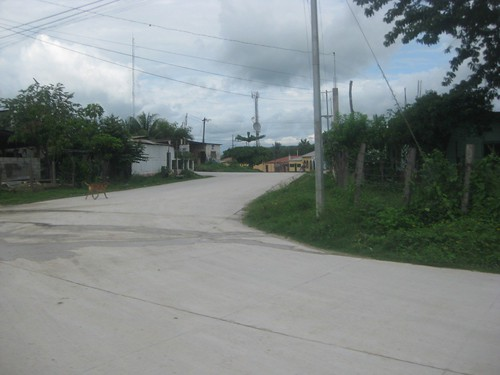
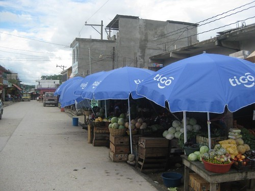

Barrio Villa Linda
este barrio nombrado por las personas del lugar porque tiempos atras era la antigua pista y como tal era villa solo basto agregarle linda, aparte de eso ai tambien se ubica el cementerio general.
Barrio Villa Linda

Barrio Las Torres
ubicado en el cerro nombrado asi, por la ubicacion de varias torres de diferentes agencias a traves de el se conectan los barrios villa linda, el campito, el centro y santa elena.
Barrio Las Torres
Barrio Las Flores
es un barrio muy pequeño pero muy lindo ai pasa la linea fronteriza tambien esa misma linea conecta con el rio mopan personas amables estan esperando su visita y segun las personas el nombre sergio gracias a un grupo de personas.
Barrio Las Flores

Barrio El Campito
segun la respuesta de una persona mayor: fue nombrado por tener ubicado ai dos campos de futbol, cancha deportiva, escuela de educacion primaria y ademas una de sus calles ya esta pavimentada tambien sus casa modernas capaces de ser admiradas por personas de la localidad o visitantes.
Barrio El Campito
Barrio Santa Elena
es el barrio que tambien es muy transitado por las personas de la localidad ai le dan la mas cordial bienvenida ai se ubica el instituto de educacion basica que fue fundado por el prof: Rodimiro Figueroa, tambien se ubica una escuela de educacion primaria perteneciente a pronade, sus lindas calles que se conectan al barrio villa linda, suchitan y el centro.
Barrio Santa Elena
Barrio Nueva Juda
es el barrio mas reciente pero tambien es admirable por la construccion de un mini parque, tambien por sus casas modernas y tambien cuenta con escuela de educacion primaria y es el barrio que finaliza el municipio pero conecta a pocas aldeas como la zarca y cuenta con un azerradero llamado el esfuerzo.
Barrio Nueva Juda

Barrio El Arrollito
este es el barrio con mas campo para habitar porque es que que tiene menos personas mas sin embargo ai esta ubicado el salon municipal, aun costado esta la cancha deportiva y una escuela de educacion primaria y las personas estan para darles la mas cordial bienvenida.
Barrio El Arrollito

Barrio La Ceibita
este es el barrio que da la bienvenida a todos los visitantes del area central y demas departamentos porque es el que esta al principio de todos los barrios ai esta ubicada la escuela de educacion basica telesecundaria tambien esta la primera gasolinera texaco a traves de sus calles se conectan el barrio santa cruz, el mirador y el arrollito.
Barrio La Ceibita
Barrio Fallabon
es el barrio que divide al barrio el centro, arrollito, campito y ceibita ai esta ubicado el campo la joya tambien encontraras la gasolinera shell tambien es el barrio que divide la aduana a traves del puente, en el transitan las ricas aguas del rio mopan un lugar tan maravilloso rico en agua dulce y sin olvidar que ai esta ubicado el monumento a don melchor.
Barrio Nueva Juda

Barrio El Centro
como el nombre lo declara el centro de Melchor de Mencos aqui encontraras las mayores casa de comercio, tambien el mercado municipal, despensa familiar, parque central, municipalidad e.t.c en este barrio tambien esta el monumento a la madre, tiene escuela de educacion primaria ai tambien se ubica el campo olimpico y es el lugar mas transitado por las personas tanto de la localidad como los extranjeros.
Barrio El Centro
Barrio Suchitan
es uno de los barrios con mas cantidad de personas, cuenta con dos escuelas de educacion primaria pertenecientes a el gobierno y pronade tambien campo de futbol y cancha deportiva. Y algunas casas de comercio como azerradero laborantes del bosque y azerradero suchitecos.
Barrio Suchitan